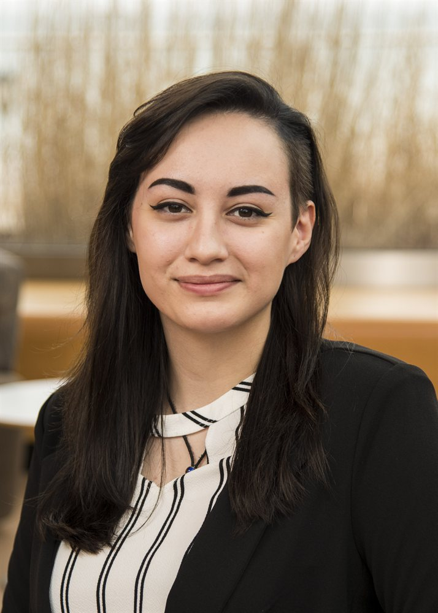
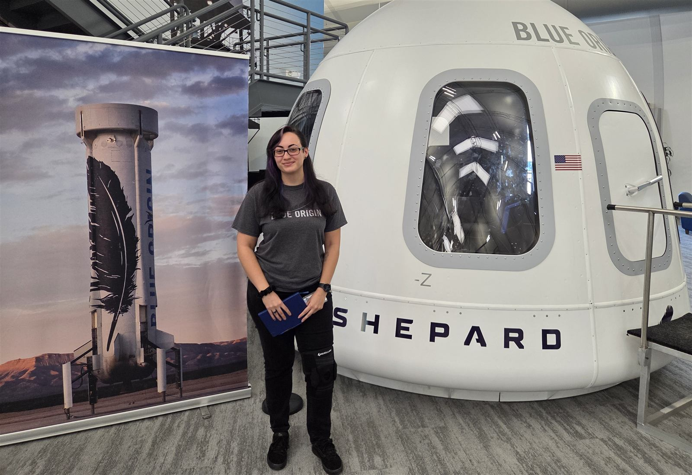
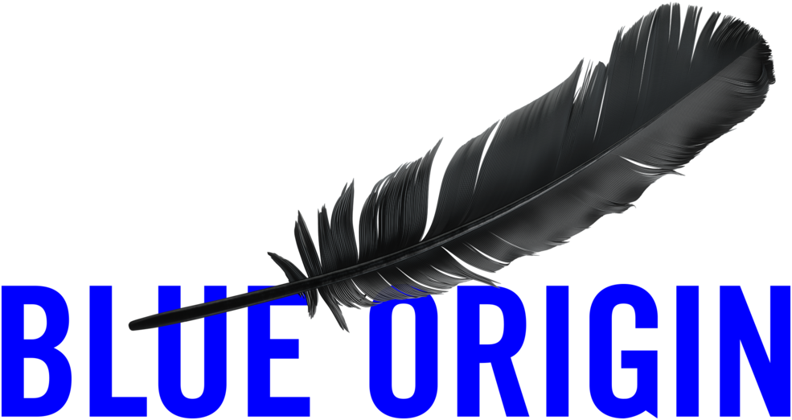
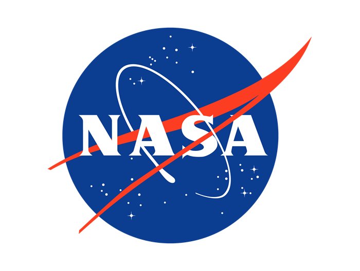
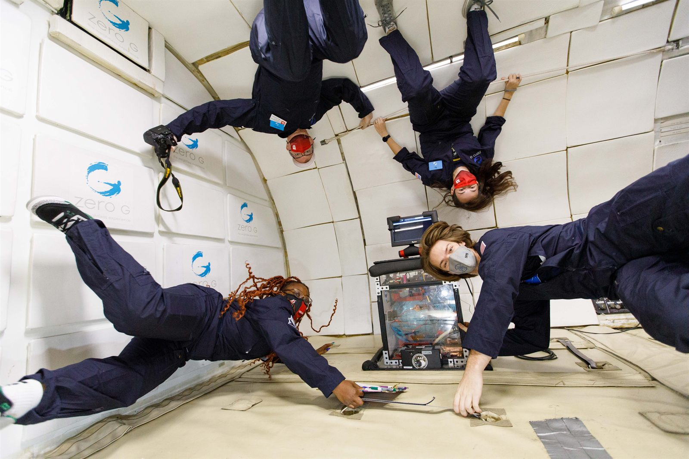
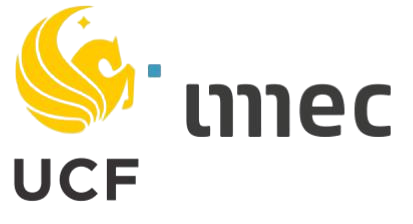
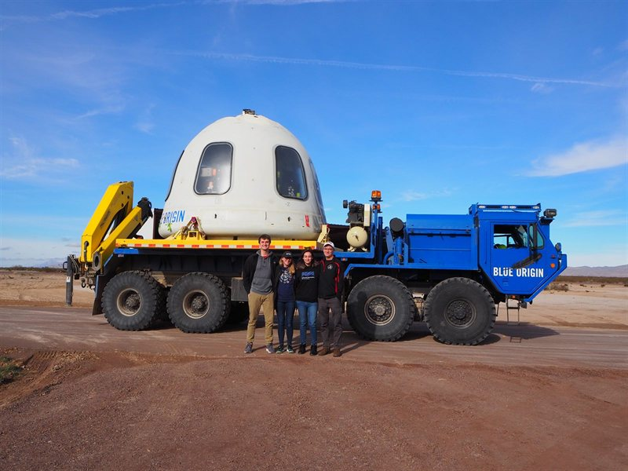
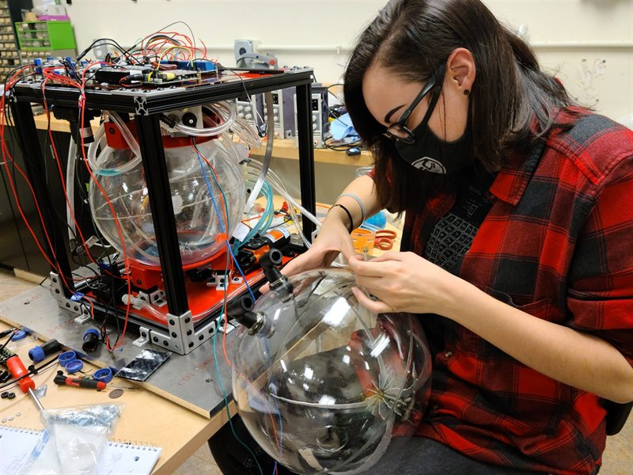
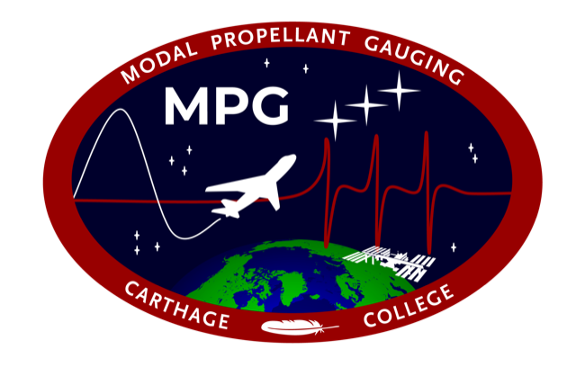
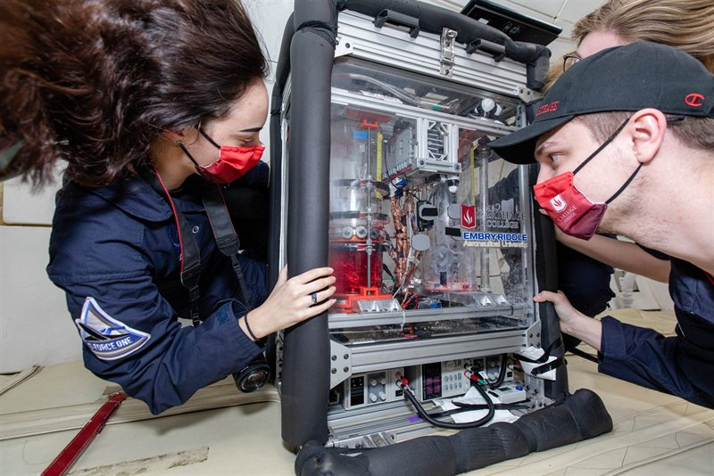

Embry-Riddle Aeronautical University, PhD, Aerospace Engineering
2024 - 2027 (Estimate)
University of Central Florida, MS, Aerospace Engineering
2021 - 2024
Carthage College, Bachelor of Arts, Physics
2017 - 2021
About Me
I am an Aerospace Engineering PhD student with a Master's in Aerospace Engineering and Bachelor's in Physics. Since my first year as an undergraduate, I have conducted research in fluid dynamics in microgravity, building and testing payloads for parabolic flight campaigns and Blue Origin New Shepard launches.
In graduate school, I have focused on two primary research projects: studying osteoporosis in astronauts, with an experiment that flew aboard New Shepard in December 2023, and studying the behavior of boiling cryogenic propellants in microgravity. I am currently pursuing my PhD in Aerospace Engineering with a concentration in microgravity fluid dynamics. From fall 2024 through spring 2025, I served as a virtual intern at NASA Glenn Research Center, conducting research related to my dissertation on cryogenic line chilldown CFD. I now work as a Thermal and Fluids Engineer at Blue Origin on the New Glenn program.
Please feel free to contact me with any questions.
Awards & Honors
Some images have links to press releases.
Fellowships & Scholarships
NSF Graduate Research Fellowship
Awarded this prestigious fellowship to fund my graduate research on cryogenic chilldown in microgravity.
ISS National Lab Space Leader Fellowship
Selected as one of three recipients nationwide for this year-long fellowship from the ISS National Lab and CASIS, supporting early-stage graduate researchers pursuing space-related work.
ORCGS Doctoral Fellowship
Awarded by the University of Central Florida in recognition of academic achievement and readiness for doctoral-level research.
WSGC Undergraduate Scholar
Awarded for the 2020-2021 academic year in recognition of excellence in STEM.
Prizes & Recognition
20 Twenties Award Nominee
Nominated for the 2022 Class of the 20 Twenties Award, which honors exceptional STEM students pursuing careers in aerospace.
Lemelson-MIT Student Prize
My team and I won this prestigious prize for our Modal Propellant Gauging (MPG) technology, competing against top schools like Johns Hopkins and MIT among over 200 applicants nationwide.
Sigma Pi Sigma Inductee
Inducted into the national physics honor society in Spring 2021 in recognition of outstanding scholarship.
Golden Leadership Award
Awarded by Carthage College for leadership and sustained involvement in co-curricular activities.
Leadership & Ambassador Roles
Society of Physics Students Chapter President
Served as the 2020-2021 chapter president, leading the group to earn the Outstanding Chapter Award for fostering an active, inclusive community.
Student Ambassador
Selected as the 2020-2021 Student Ambassador for WSGC at Carthage College, recruiting and mentoring students pursuing STEM careers.
Wisconsin Space Grant Representative
Represented the Wisconsin Space Grant Consortium at its 30th Anniversary in Washington, D.C., in February 2020, showcasing accomplishments in STEM.
Experience

Thermal and Fluids Engineer
Aero/Thermal/Fluids Team

New Glenn First Stage (GS1)
7/2025 - Present
I develop and maintain thermal and fluids models in ANSYS Thermal Desktop for the first and second generation of GS1, New Glenn's first stage. These models provide critical data to other teams supporting design and performance analysis across the vehicle's life cycle.
Less than a year into the role, I was recognized with a Liftoff Award by my manager for meaningful, significant contributions to the program.
I also provide console support for launches, including conducting post mission data reviews, and work closely with other disciplines, including the BE-4 engines team, to help ensure mission success. I was on console for the NG-2 launch as a trainee, which achieved New Glenn's first successful booster landing, and for the NG-3 launch and booster landing as the GS1 fluids analyst.

NASA Glenn Research Center OSTEM Intern
LTF/Fluid and Cryogenic Systems Branch
In-Space Cryogenic Propellant Transfer Operations, Data Analysis, and Modeling
8/2024 - 5/2025
During this internship, I contributed to research focusing on CFD simulations of cryogenics chilldown processes for in-space refueling applications.
My work involved setting up, running, and post processing complex 1D and CFD simulations of propellant transfer line flow. Using ANSYS DesignModeler, FLUENT, CFD-Post, and MATLAB, I analyzed thermal behavior and phase transitions in liquid hydrogen.
Additionally, I used MATLAB to produce boiling curves from pool boiling literature, identifying the most accurate correlations for microgravity predictions. The results were validated against experimental data, increasing our understanding of cryogenic behaviors in space.

Photo courtesy of Zero-G (Steve Boxall Photography)
Parabolic Flight Coach
Contractor
.png)
Zero Gravity Corporation
7/2021 - Present
I have been flying with the Zero Gravity Corporation (Zero-G) since 2018, completing approximately 30 flights to date. As of the summer of 2021, I was hired as a flight coach. For research flights, my role includes being part of the staff team that conducts Team Readiness Reviews (TRRs) on each experiment that flies with us. This includes ensuring the payload is safe to fly: no loose objects, no sharp corners, and no dangerous liquids/components are being brought onto the aircraft.
During flight, my job is to ensure that passengers are being safe and to assist if anyone is feeling unwell. For commercial flights, I have the same responsibilities in flight. My 'on the ground' role (for both research and commercial) consists of preparing the passengers for what to expect during flight.
Before becoming a flight coach, I flew on a handful of research campaigns for various payloads. Having gone through the TRR and flight process as a customer first has given me a unique experience, and the knowledge of how to best assist customers.
NASA Kennedy Space Center OSTEM Intern
Biomedical Engineering and Research Lab
Cryogenic Tesla Valves
6/2024 - 8/2024
During the summer of 2024, I worked on a project simulating cryogenic flows through tesla valves. The goal of the project was to test various tesla valve designs with cryogenics via CFD and analyze pressure drops in bidirectional flow.
I developed a series of CFD simulations using Star-CCM+, generating a dataset to quantify the pressure drop characteristics across varying flow conditions. My results for the baseline design matched published literature values, validating the simulation approach for the remaining tesla valve designs tested.

Graduate Researcher
University of Central Florida (UCF)
Dr. Michael Kinzel's Computational Fluids and Aerodynamics Lab (CFAL)
This work was funded by NASA's Techflight opportunity under award #80NSSC21K0338.
Read my ASME research paper presented at the Fluids Engineering Division Summer Meeting 2022.Lens Free Imaging (LFI) Techflight
9/2021 - 8/2024
In collaboration with imec USA, UCF is researching osteoporosis in astronauts in low-gravity environments. I utilized Star-CCM+ to create Computational Fluid Dynamics (CFD) simulations of microfluidics in microgravity, focusing on fluid instabilities and their role in bone loss.
I also conducted lab experiments to verify the CFD simulations, demonstrating fluid behaviors in both normal and low gravity. This included creating CAD models with Autodesk Inventor of microfluidic devices, 3D printing a mold for variations of the device using and Anycubic resin printer, and fully fabricating these devices. The experiments required precise and careful procedures to be successful.
Throughout this project, I mentored 5 undergraduate students to assist with experiments. I utilized Trello to assign tasks and keep important documents and meeting presentations organized.
This experiment has seen flight on Blue Origin's New Shepard Vehicle in 2023 (NS-24).
NASA Kennedy Space Center OSTEM Intern
Advanced Engineering Development Branch
Modal Propellant Gauging on the International Space Station (MPG-ISS)
6/2020 - 8/2020 & 6/2021 - 8/2021
I was selected for an internship at NASA Kennedy Space Center’s Advanced Engineering Development Branch during the summers of 2020 and 2021. My role involved designing, building, and testing a payload that is anticipating flight aboard a SpaceX Dragon Capsule for testing on the International Space Station (ISS).
During these 10-week internships, I collaborated with a team of engineers to develop and construct a payload implementing Modal Propellant Gauging (MPG), a lightweight, cost-efficient, and high-resolution fuel gauging system for low-gravity environments. I designed and modeled the experiment using Autodesk Inventor, gaining valuable experience in CAD modeling.
Additionally, I coordinated with external companies and Kennedy Space Center laboratories to manufacture custom components for the experiment, gaining hands-on experience in engineering design, procurement, and fabrication.

Photo courtesy of Blue Origin
Mission Team Lead, Data Acquisition & Analyst Lead, Lead Mechanical Engineer
NASA Flight Opportunities
Wisconsin Space Grant Consortium conference proceedings papers:
Modal Propellant Gauging - Blue Origin Payload (MPG-BOP)
2/2018 - 5/2021
Throughout my undergraduate career, I contributed to the development of MPG and prepared this payload for two suborbital missions aboard Blue Origin’s New Shepard vehicle in January and December 2019.
I joined MPG-BOP in my freshman year as a mechanical team member, focusing on using SolidWorks, to update the payload design and making the same modifications to the physical experiment.
Over the following year, I advanced to both the Mission Team Lead & Data Acquisition and Analyst Lead. I became proficient in using the SLICE Micro system from DTS for data collection and developed and improved current MATLAB scripts to generate frequency response functions from modal data.

Data Acquisition & Analyst Lead, Mechanical Engineer
NASA Flight Opportunities

MPG mission patch
Modal Propellant Gauging - Propellant Refueling and on-Orbit Transfer Operations (MPG-PROTO)
9/2019 - 5/2021
MPG-PROTO is an advanced iteration of the MPG-BOP payload, designed to study liquid flow between two tanks in microgravity. This experiment was developed for both New Shepard and Zero-G parabolic flight campaigns.
I played a key role in designing the payload from scratch, sourcing parts, and leading the assembly process. Additionally, my team and I were responsible for creating essential documentation for future students to continue the project. This included, but not limited to, a concept of operations, testing procedure documents, a detailed integration plan, and a bill of materials.
The experiment focused on fluid dynamics inside both spherical and cylindrical propellant tanks in microgravity. We tested propellant management devices (PMDs), designed to direct liquid toward a designated port during low fill fractions. My primary design contributions were made using Autodesk Inventor.

Mission Team Lead, Lead Mechanical Engineer
NASA Flight Opportunities
The MaSC project was highlighted by NASA Flight Opportunities. Read the post on NASA's website.
Magneto-active Slosh Control (MaSC)
9/2018 - 5/2021
MaSC is a collaborative effort between Carthage College and Embry-Riddle Aeronautical University aimed at suppressing slosh in propellant tanks in low-gravity environments. The experiment utilizes Helmholtz Coils and a metallic alloy membrane inside the tank to influence fluid movement.
This experiment was integrated into an existing payload from a previous iteration of MPG. My primary responsibilities included designing, fabricating, and testing new cylindrical polycarbonate tanks, ensuring space for the metallic membrane. Additionally, I used Autodesk inventor to contribute to the design and structural support of the Helmholtz coil mounts.
Featured Research
Peer-reviewed papers and conference proceedings from my graduate and undergraduate research.
ASME FEDSM 2022
Peer-reviewed paper presented at the ASME Fluids Engineering Division Summer Meeting, based on CFD research conducted at UCF's Computational Fluids and Aerodynamics Lab under NASA's TechFlight award.
Read the paper →MPG-BOP Proceedings Papers
Wisconsin Space Grant Consortium proceedings papers (2018 and 2019) on the design and flight results of the Modal Propellant Gauging payload flown aboard Blue Origin's New Shepard.
Read the papers →MPG-ISS Abstract and Paper
NASA Kennedy Space Center OSTEM internship abstract and paper on propellant fill-level sensing technology developed for the ISS National Laboratory.
Read the paper →